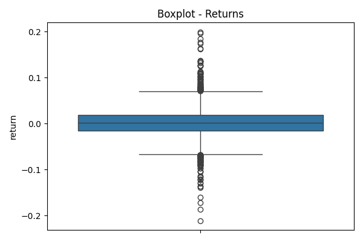
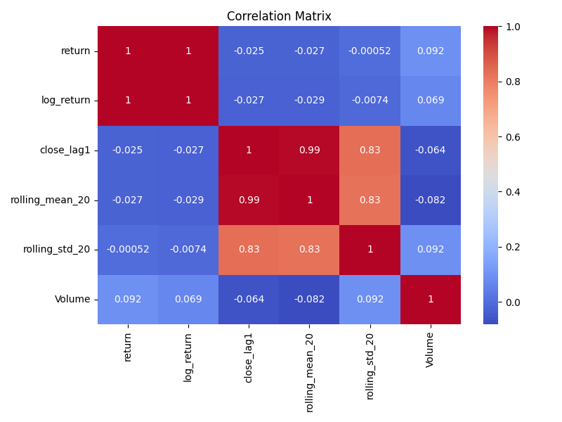
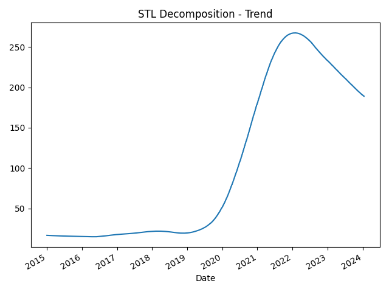

📊 Exploratory Data Analysis (EDA)¶
This section presents visual and statistical analysis of Tesla’s historical stock behavior to inform model development.
1. 📈 Tesla Closing Price Over Time¶

Interpretation: Tesla’s stock price exhibits exponential growth from late 2019 to 2022, followed by high volatility. This trend reflects investor enthusiasm and market dynamics.
2. 🔠Daily Returns Over Time¶

Interpretation: Returns are centered around zero with spikes during major events (e.g., 2020 pandemic). Modeling returns captures short-term fluctuations and risk.
3. 📉 20-Day Rolling Volatility¶
Interpretation: Volatility surged during 2020 and 2022, aligning with market uncertainty. Rolling volatility helps evaluate changing risk.
4. 🧪 Outlier Detection via Boxplots¶
Returns:

Volume:

Interpretation: Outliers in returns and volume highlight extreme events. These may influence model sensitivity and require preprocessing.
5. 📊 Descriptive Statistics¶
| Feature | Mean | Skewness | Kurtosis |
|---|---|---|---|
| Return | 0.0018 | 0.179 | 4.34 |
| Log Return | 0.0012 | -0.159 | 4.52 |
| Rolling Std (20) | 6.73 | 1.69 | 2.94 |
| Volume | 1.14e+08 | 2.74 | 13.33 |
Interpretation: Non-normal behavior in volume (high kurtosis, skewness) suggests episodic surges in trading activity.
6. 🔗 Correlation Matrix¶

Interpretation: Strong correlation between lag and rolling features confirms temporal structure. Weak correlation between volume and return aligns with financial theory.
7. 🔄 ACF and PACF of Returns¶
ACF:
PACF:

Interpretation: Lag 1 exhibits weak autocorrelation. Higher-order lags contribute little, supporting simpler AR/MA models.
8. 📉 STL Decomposition¶
Trend:

Seasonal:

Residual:
Interpretation: A strong upward trend and mild seasonality are present. Residuals highlight irregular fluctuations for model calibration.